Toward a General Structure- and Region-Aware Domain Adaptation Framework for Wild Animal Tracking
SRA-WAT is a tracker-agnostic, training-only domain adaptation framework for wild animal tracking. Its two alignment modules are removed after training, so the base tracker keeps its parameters, FLOPs and FPS.
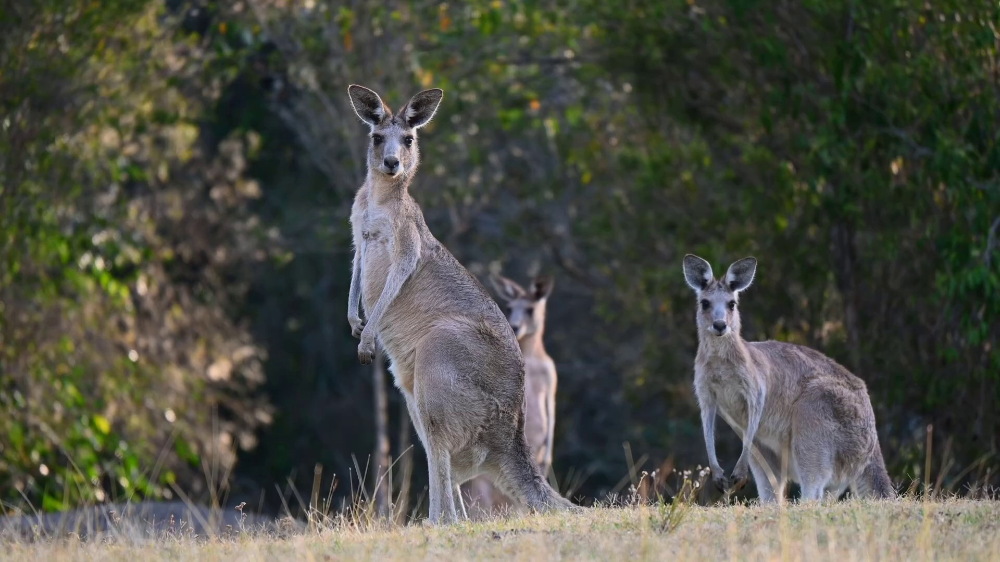
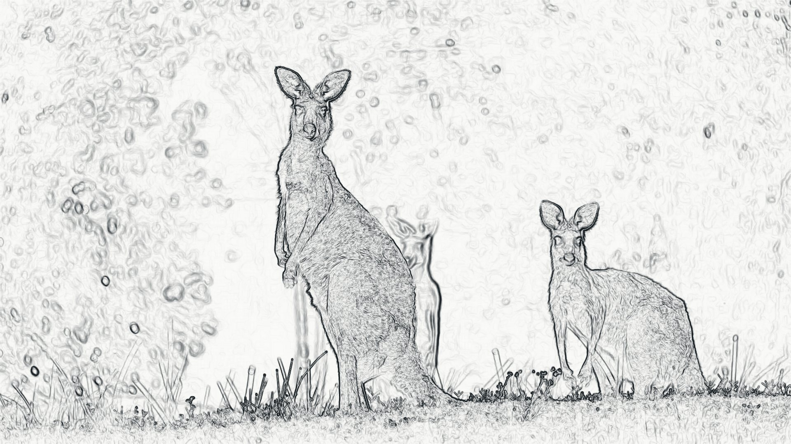
SCAH: where to align. The right side shows the Scharr gradient magnitude of this Wildlife-LT kangaroo frame, a structural cue SCAH injects into RGB tokens during training.RGTA: what to align. The right side shows the 16 × 16 search tokens RGTA groups around the kangaroo: green tokens overlap its box, a yellow one-token ring forms the boundary, and the rest are background. The search region is four times the target size, so it runs past the frame edge; the darkened strip on the left lies outside it. Drag the divider to compare.
Abstract
Generic object trackers typically suffer severe performance degradation when directly deployed for wild animal tracking (WAT), primarily due to significant cross-domain distribution shifts. Further compounding the target localization challenge in WAT are non-rigid animal deformations, frequent target occlusions, visually similar background distractors, and intricate natural scene environments. To address these issues, we propose a Structure- and Region-Aware Domain Adaptation framework for WAT (SRA-WAT), a general, tracker-agnostic adaptation paradigm designed exclusively for the training phase. Instead of developing a novel tracking backbone, SRA-WAT enhances the performance of off-the-shelf trackers via two complementary plug-and-play adaptation modules. Specifically, the Structural Cue Alignment Head (SCAH) injects Scharr-gradient cues and confines adversarial alignment to search representations, while the Region-guided Token Alignment (RGTA) module conducts fine-grained alignment for foreground, boundary, and background prototypes. Jointly, these two modules explicitly resolve the core tracking-adaptation problems of where and what features to align. Notably, both modules are removed during inference, leaving the base tracker’s inference pipeline, parameter size, floating-point operations (FLOPs), and frames per second (FPS) completely unaltered. To facilitate supervised target-domain adaptation for WAT, we further construct Wildlife-LT, a large-scale labeled long-term wildlife tracking dataset. It comprises 251 video sequences, covers 38 animal categories, and contains 392,362 manually annotated frames, with continuous target trajectories enabling reliable template-search feature matching across long temporal intervals. Extensive experiments on the WATB benchmark demonstrate that SRA-WAT consistently outperforms 9 representative base trackers by an average of 2.62 in AUC and 3.67 in Precision. The evaluated trackers cover diverse mainstream architectures, including single-stream, dual-stream, multi-stage, and state-space-based designs. The universal performance gains across all tracker variants strongly validate the generalizability and tracker-agnostic efficacy of our SRA-WAT framework.
Method
SRA-WAT performs supervised adaptation from generic source data to Wildlife-LT target data. Template-search pairs from both domains pass through a shared backbone. SCAH processes the base tracker's template and search representations, while RGTA operates on its unmodulated final search representation. This backbone-independent design can be integrated into single-stream, dual-stream, multi-stage, and state-space trackers.
SCAH injects multi-channel Scharr cues into RGB tokens through learnable modulation, confines adversarial alignment to search representations, and uses source template-search pairs to preserve category information. RGTA partitions search tokens into foreground, boundary, and background regions, aligns their prototype distributions using multi-kernel MMD with source-domain stop-gradient anchors, and preserves foreground-background separation. At inference, SCAH and RGTA are disabled, leaving the base tracker's inference pipeline, parameter size, FLOPs, and FPS unchanged.

-
Shared tracking backbone
Source-domain and Wildlife-LT template-search pairs train the same base tracker with supervised localization objectives.
-
Complementary alignment
SCAH determines where alignment operates through structure-guided search alignment, while RGTA determines what is aligned through foreground, boundary, and background prototypes.
-
Zero inference overhead
SCAH and RGTA are disabled after training, preserving the base tracker's original inference pipeline, parameter size, FLOPs, and FPS.
Results on WATB
On WATB, source-only DeiT-Tiny achieves 47.61% AUC and 51.96% Precision. Direct training with Wildlife-LT increases these scores to 48.54% and 53.03%. With SRA-WAT, they further increase to 50.43% and 56.12%, corresponding to gains of 2.82 and 4.16 points over source-only training and additional gains of 1.89 and 3.09 points over direct target-domain data mixing. Across the nine evaluated trackers, direct Wildlife-LT training yields mean gains of 1.35 AUC points and 2.27 Precision points, whereas SRA-WAT increases the mean gains to 2.62 and 3.67 points—an additional 1.27 AUC and 1.40 Precision points.
AUCPrecision on WATB (%)
Comparison on WATB. P denotes precision. ΔAUC and ΔP report absolute percentage-point gains over the corresponding Base model, with relative gains shown in parentheses.
| Tracker | Publication | Training setting | AUC (%) | P (%) | ΔAUC | ΔP |
|---|---|---|---|---|---|---|
| DeiT-Tiny | — | Base | 47.61 | 51.96 | — | — |
| +Wildlife-LT | 48.54 | 53.03 | +0.93 (+1.95%) | +1.07 (+2.06%) | ||
| +SRA-WAT | 50.43 | 56.12 | +2.82 (+5.92%) | +4.16 (+8.01%) | ||
| SpikeTrack | CVPR '26 | Base | 50.86 | 57.13 | — | — |
| +Wildlife-LT | 51.54 | 58.07 | +0.68 (+1.34%) | +0.94 (+1.65%) | ||
| +SRA-WAT | 52.86 | 60.71 | +2.00 (+3.93%) | +3.58 (+6.27%) | ||
| SSTrack | IJCAI '25 | Base | 52.42 | 61.72 | — | — |
| +Wildlife-LT | 52.47 | 62.05 | +0.05 (+0.10%) | +0.33 (+0.53%) | ||
| +SRA-WAT | 54.92 | 63.18 | +2.50 (+4.77%) | +1.46 (+2.37%) | ||
| LMTrack | AAAI '25 | Base | 51.16 | 56.65 | — | — |
| +Wildlife-LT | 52.65 | 59.49 | +1.49 (+2.91%) | +2.84 (+5.01%) | ||
| +SRA-WAT | 53.12 | 59.89 | +1.96 (+3.83%) | +3.24 (+5.72%) | ||
| MCITrack-B | AAAI '25 | Base | 53.57 | 59.36 | — | — |
| +Wildlife-LT | 56.25 | 63.83 | +2.68 (+5.00%) | +4.47 (+7.53%) | ||
| +SRA-WAT | 57.56 | 65.41 | +3.99 (+7.45%) | +6.05 (+10.19%) | ||
| AsymTrack-T | AAAI '25 | Base | 49.12 | 54.02 | — | — |
| +Wildlife-LT | 49.91 | 54.96 | +0.79 (+1.61%) | +0.94 (+1.74%) | ||
| +SRA-WAT | 51.66 | 56.87 | +2.54 (+5.17%) | +2.85 (+5.28%) | ||
| ODTrack-B | AAAI '24 | Base | 55.09 | 61.48 | — | — |
| +Wildlife-LT | 56.52 | 64.54 | +1.43 (+2.60%) | +3.06 (+4.98%) | ||
| +SRA-WAT | 57.32 | 65.15 | +2.23 (+4.05%) | +3.67 (+5.97%) | ||
| OSTrack-B | ECCV '22 | Base | 48.85 | 52.97 | — | — |
| +Wildlife-LT | 50.83 | 55.96 | +1.98 (+4.05%) | +2.99 (+5.64%) | ||
| +SRA-WAT | 51.25 | 56.51 | +2.40 (+4.91%) | +3.54 (+6.68%) | ||
| TrackingMamba | IEEE JSTARS '24 | Base | 45.45 | 48.61 | — | — |
| +Wildlife-LT | 47.58 | 52.40 | +2.13 (+4.69%) | +3.79 (+7.80%) | ||
| +SRA-WAT | 48.57 | 53.11 | +3.12 (+6.86%) | +4.50 (+9.26%) |
Wildlife-LT
Wildlife-LT is a labeled long-term target-domain dataset for supervised domain-adaptive tracking. It has no sequence overlap with WATB, AnimalTrack, or Wildlife2024 and provides frame-level axis-aligned bounding boxes, visibility states, and category labels for reliable template-search sampling and region-aware alignment.
- sequences
- 251
- animal categories
- 38
- annotated frames
- 392,362
- average frames per sequence
- 1,563.2
- median frames per sequence
- 1,399.0
- sequences longer than 1,000 frames
- 200
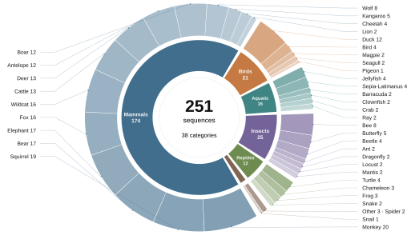
-
Dense tracking annotations
Each sequence is annotated frame by frame with axis-aligned boxes, full-occlusion flags, out-of-view flags, and category labels. These annotations support tracking supervision, reliable template-search pair sampling, and region-aware token partitioning.
-
Long temporal gaps
All 251 sequences support exact 300-frame sampling gaps, and 200 sequences support 1,000-frame gaps, yielding 306,594 and 144,012 valid visible template-search pairs, respectively.
-
Diverse natural conditions
Videos are collected from publicly available Internet sources, including video-sharing websites and social media, and selected to cover non-rigid motion, viewpoint change, scale variation, occlusion, camera motion, camouflage, and similar-object interference.
Annotation protocol and quality control
Wildlife-LT was annotated by eight annotators and reviewed by a five-member checking team. Each sequence was assigned to one annotator and subsequently checked against the annotation protocol. Annotations that failed to meet the protocol were returned for correction and rechecked. Annotation, review, and correction took approximately eight months. Videos from WATB, AnimalTrack, and Wildlife2024 were excluded during dataset collection.
The annotated target is the same individual throughout each sequence, with a fixed definition of either the whole animal or a designated body part. Bounding boxes tightly enclose the visible target region. Fully occluded and out-of-view frames retain the last visible box as a placeholder and carry the corresponding absence flag.
Download
Wildlife-LT is available from Baidu Netdisk. Extraction code: y2Q5
Representative frames
One frame from each of the 38 Wildlife-LT categories, spanning mammals, birds, aquatic animals, insects, and reptiles. Select a frame to view it at full size.
- Ant
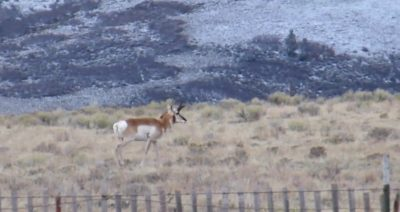
Antelope- Barracuda
- Bear
- Bee
- Beetle
- Bird
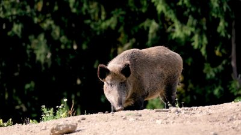
Boar- Butterfly
- Cattle
- Chameleon
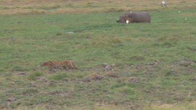
Cheetah- Clownfish
- Crab
- Deer
- Dragonfly
- Duck
- Elephant
- Fox
- Frog
- Jellyfish
- Kangaroo
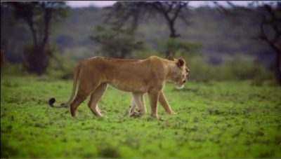
Lion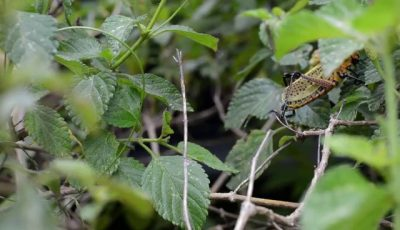
Locust- Magpie
- Mantis
- Monkey
- Pigeon
- Ray
- Seagull
- Sepia-Latimanus
- Snail
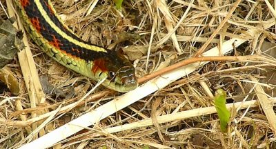
Snake- Spider
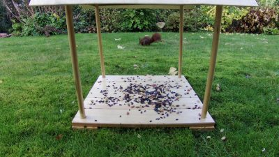
Squirrel- Turtle
- Wildcat
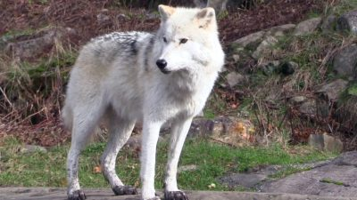
Wolf


Challenge attributes
The most frequent Wildlife-LT challenges are deformation, out-of-plane rotation, camera motion, scale variation, and partial occlusion, occurring in 223, 200, 165, 160, and 158 sequences, respectively. Similar-object interference occurs in 109 sequences.
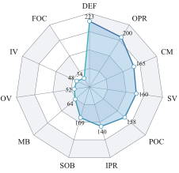
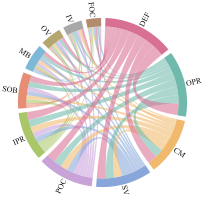
We annotate sequences at the sequence level for the 11 challenge attributes represented in Wildlife-LT.
- IV
- Illumination variation during tracking.
- IPR
- In-plane rotation of the target.
- OPR
- Out-of-plane rotation of the target.
- DEF
- Deformation or shape change of the target.
- SV
- Target scale variation outside the interval [0.5, 2].
- CM
- Camera switching or sudden camera motion.
- OV
- Out-of-view target disappearance.
- FOC
- Full occlusion of the target.
- POC
- Partial occlusion of the target.
- SOB
- Similar objects appearing in the background.
- MB
- Motion blur caused by camera shake or target motion.
Citation
@misc{srawat2026wildlifelt,
title = {Toward a General Structure- and Region-Aware Domain Adaptation Framework for Wild Animal Tracking},
author = {Yan, Ziqing and Wang, Fasheng and Wang, Mengyin and Shi, Zhan and Chen, Fangmei and Li, Haojie},
year = {2026},
url = {https://yanziqing25.github.io/SRA-WAT},
note = {Project page and code repository}
}